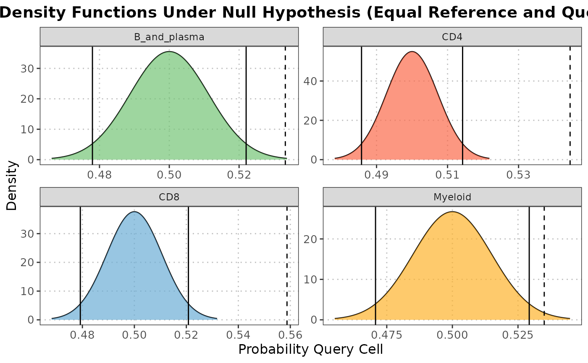

R/calculateNearestNeighborProbabilities.R, R/plot.calculateNearestNeighborProbabilities.R
calculateNearestNeighborProbabilities.RdThis function computes the probabilities for each sample of belonging to either the reference or query dataset for each cell type using nearest neighbor analysis.
This function generates a density plot showing the distribution of probabilities for each sample of belonging to either the reference or query dataset for each cell type.
A SingleCellExperiment object containing numeric expression matrix for the query cells.
A SingleCellExperiment object containing numeric expression matrix for the reference cells.
An integer specifying the number of nearest neighbors to consider. Default is 15.
An integer specifying the number of principal components to use for dimensionality reduction. Default is 10.
A vector specifying the subset of principal components to use in the analysis. Default is c(1:10).
A character string specifying the column name in the query dataset containing cell type annotations.
A character string specifying the column name in the reference dataset containing cell type annotations.
An object of class nearestNeighbotDiagnostics containing the probabilities calculated by the calculateNearestNeighborProbabilities function.
A character vector specifying the cell types to include in the plot. If NULL, all cell types in x will be plotted. Default is NULL.
A character string specifying the type of probability to plot. Must be either "query" or "reference". Default is "query".
Additional arguments to be passed to geom_density.
A list where each element corresponds to a cell type and contains two vectors:
The probabilities of each query sample belonging to the reference dataset.
The probabilities of each query sample belonging to the query dataset.
The list is assigned the class "nearestNeighbotDiagnostics".
A ggplot2 density plot.
This function performs a nearest neighbor search to calculate the probability of each sample in the query dataset belonging to the reference dataset for each cell type. It uses principal component analysis (PCA) to reduce the dimensionality of the data before performing the nearest neighbor search. The function balances the sample sizes between the reference and query datasets by data augmentation if necessary.
This function creates a density plot to visualize the distribution of probabilities for each sample belonging to the reference or query dataset for each cell type. It utilizes the ggplot2 package for plotting.
plot.calculateNearestNeighborProbabilities
calculateNearestNeighborProbabilities
# Load necessary library
library(scRNAseq)
library(scuttle)
library(scran)
library(SingleR)
library(scater)
# Load data
sce <- HeOrganAtlasData(tissue = c("Marrow"), ensembl = FALSE)
# Divide the data into reference and query datasets
set.seed(100)
indices <- sample(ncol(assay(sce)), size = floor(0.7 * ncol(assay(sce))), replace = FALSE)
ref_data <- sce[, indices]
query_data <- sce[, -indices]
# log transform datasets
ref_data <- logNormCounts(ref_data)
query_data <- logNormCounts(query_data)
# Get cell type scores using SingleR (or any other cell type annotation method)
scores <- SingleR(query_data, ref_data, labels = ref_data$reclustered.broad)
# Add labels to query object
colData(query_data)$labels <- scores$labels
# Selecting highly variable genes (can be customized by the user)
ref_var <- getTopHVGs(ref_data, n = 500)
query_var <- getTopHVGs(query_data, n = 500)
# Intersect the gene symbols to obtain common genes
common_genes <- intersect(ref_var, query_var)
ref_data_subset <- ref_data[common_genes, ]
query_data_subset <- query_data[common_genes, ]
# Run PCA on the reference data
ref_data_subset <- runPCA(ref_data_subset)
# Project the query data onto PCA space of reference
nn_output <- calculateNearestNeighborProbabilities(query_data_subset, ref_data_subset,
n_neighbor = 15,
n_components = 10,
pc_subset = c(1:10),
query_cell_type_col = "labels",
ref_cell_type_col = "reclustered.broad")
# Plot output
plot(nn_output, cell_types = c("CD4", "CD8", "B_and_plasma", "Myeloid"),
prob_type = "query")
